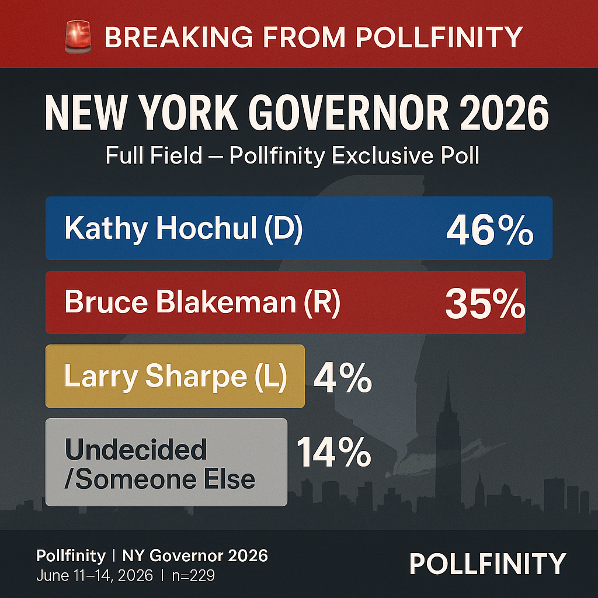
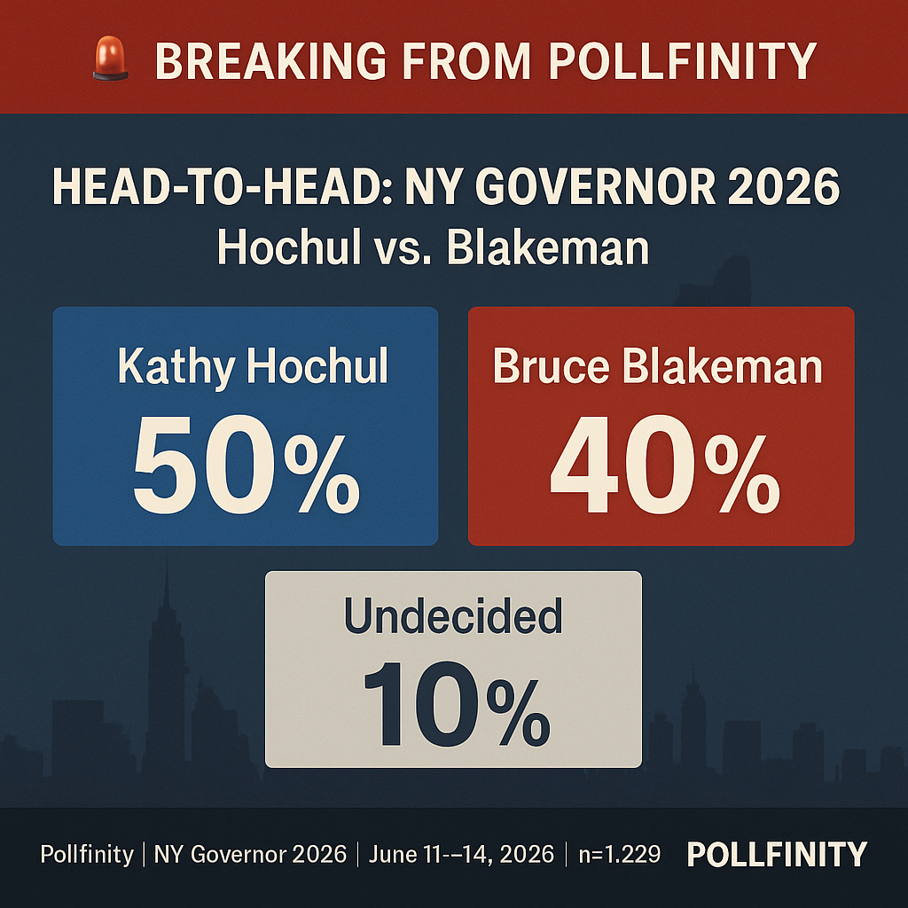
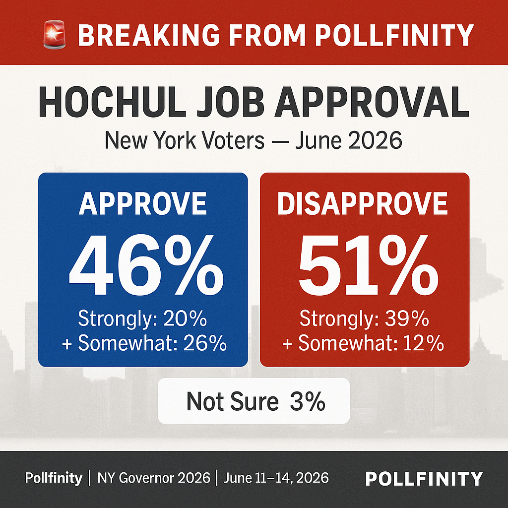
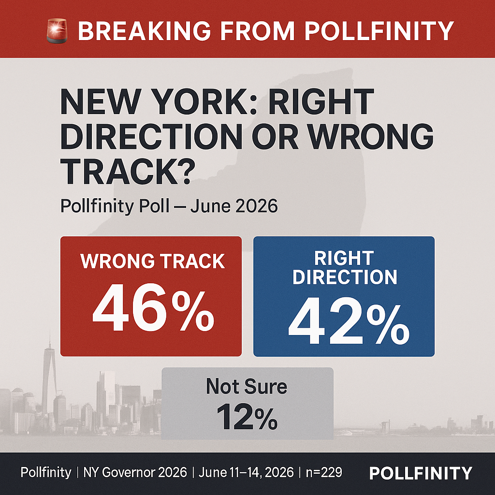

Pollfinity Research · Exclusive Survey · Released June 16, 2026
Exclusive Pollfinity Research Survey — New York Registered Voters — June 11–14, 2026 | n = 229 Completed Interviews




The race shows near-total partisan sorting, with very little crossover vote at this stage. Among Democrats (44% of the sample), Hochul leads 78–8%, with the remainder undecided or choosing Sharpe. Among Republicans (21% of the sample), Blakeman leads decisively at 96–2%. The battleground lies among unaffiliated and minor-party voters (31% of the sample), where Hochul leads 37–27%, but 27% remain undecided and 10% name Sharpe — leaving considerable room for the race to tighten.
The scale of Blakeman's advantage among Republicans (+94 net) reflects consolidation typical of an incumbent-challenger contest at this stage of the cycle. The question heading into 2026 is whether Hochul can hold her margins among unaffiliated voters — who make up nearly a third of the electorate — against a well-funded Nassau County Executive with suburban name recognition.
Geographic variation is sharp. Hochul's margin is driven almost entirely by New York City and its immediate suburbs, while the upstate contest narrows significantly.
| Region | Share of Sample | Full-Field Margin | Top Numbers |
|---|---|---|---|
| New York City | 27% | Hochul +21 | Hochul 53% · Blakeman 32% |
| LI / Suburbs | 20% | Hochul +15 | Hochul 52% · Blakeman 37% |
| Upstate / Rest of State | 53% | Hochul +4 | Hochul 40% · Blakeman 36% |
Note: In the head-to-head matchup, the upstate race narrows further to a near-tie, with Blakeman edging Hochul 45–44% in that region — a notable vulnerability for the incumbent if turnout patterns shift from 2022.
Among self-identified Republican respondents, Blakeman holds a commanding lead in a hypothetical primary: Blakeman 37%, Sharpe 13%, Undecided 50%. The high undecided share reflects the early timing of this poll — the primary is more than a year away. Crucially, 64% of all respondents have never heard of Larry Sharpe, underscoring the significant name recognition gap that Sharpe would need to close to be a meaningful factor in the race.
When asked to name the most important issue in deciding their vote for governor, respondents cited the following:
Cost of living and inflation dominate the issue landscape by a wide margin, consistent with national polling environments in 2025–26. Taxes rank second, a theme likely amplified by New York's high cost burden. Crime and public safety — a defining issue in the 2022 cycle — remains in the top three but is no longer the singular driver it was under Eric Adams and the post-COVID crime surge.
For press inquiries or data requests, contact polls@pollfinity.com
For crosstabs, full questionnaire, or press inquiries, contact:
polls@pollfinity.com
About Pollfinity Research
Pollfinity Research LLC is an independent, non-partisan polling organization based in California. We do not accept funding from campaigns, political parties, or advocacy groups.
Learn more →Citation
"Pollfinity Research LLC. New York Governor 2026 Survey. n=229 registered voters. Field dates: June 11–14, 2026. Margin of error: ±6.5 pp (95% CI). Released June 16, 2026. pollfinity.com/polls/ny-governor-2026"